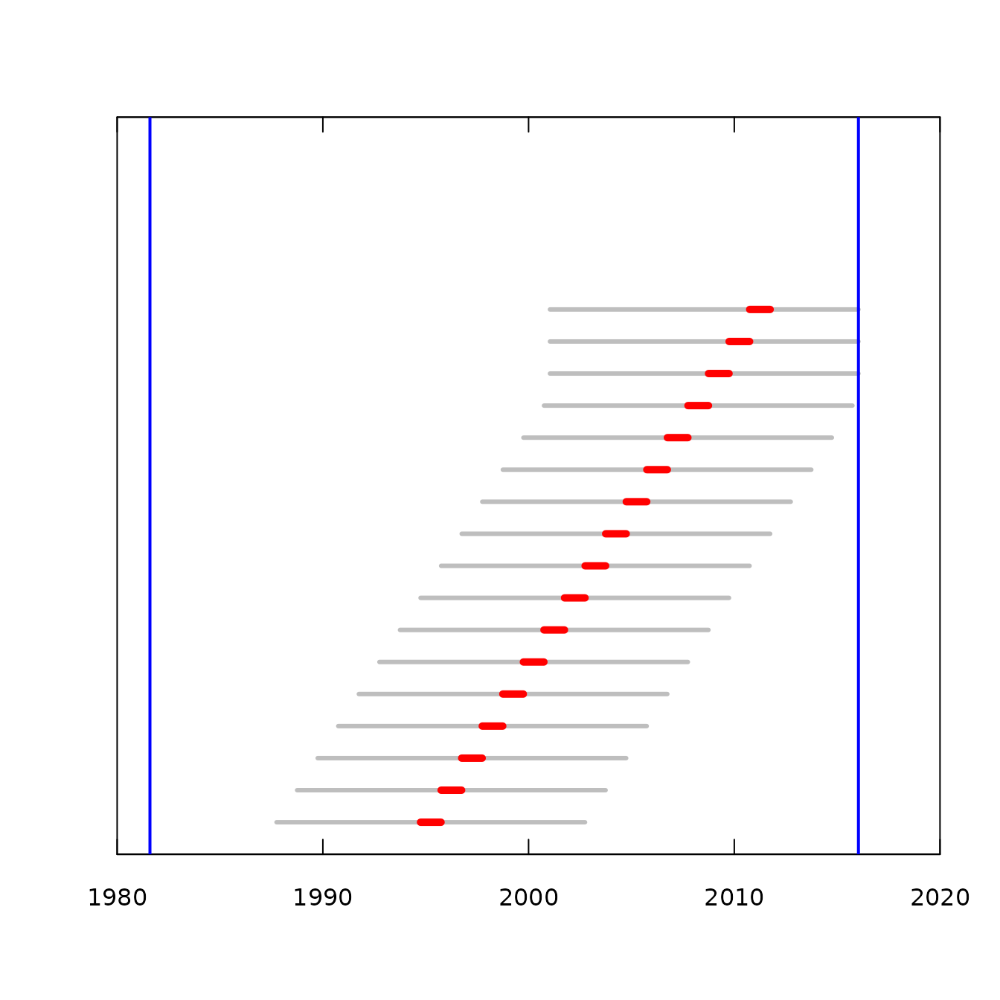
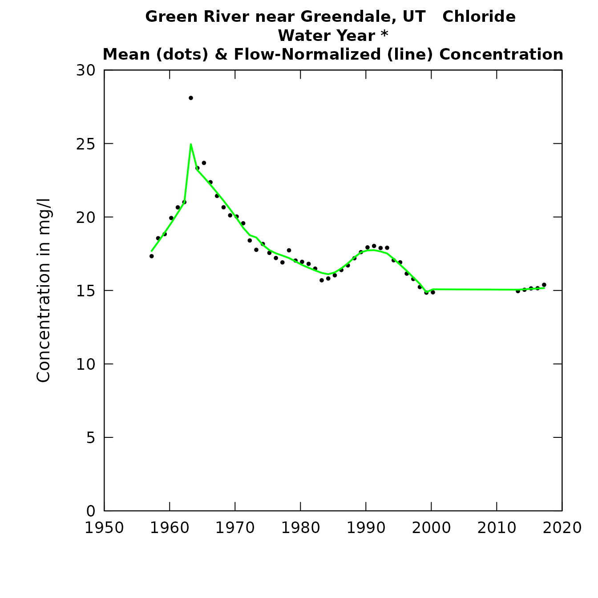
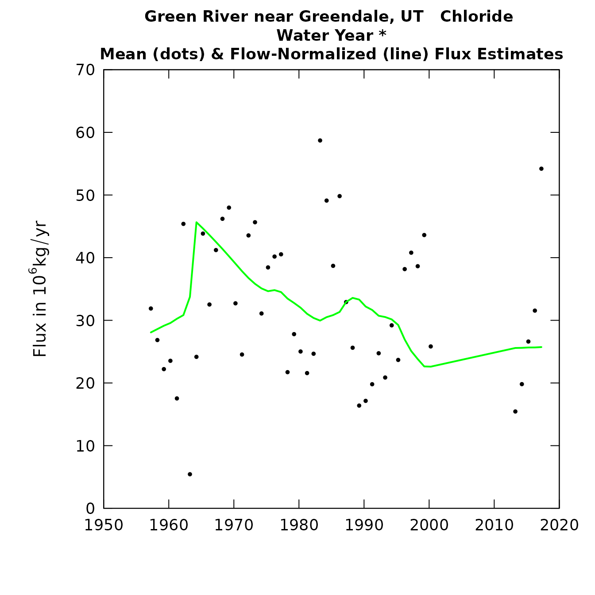
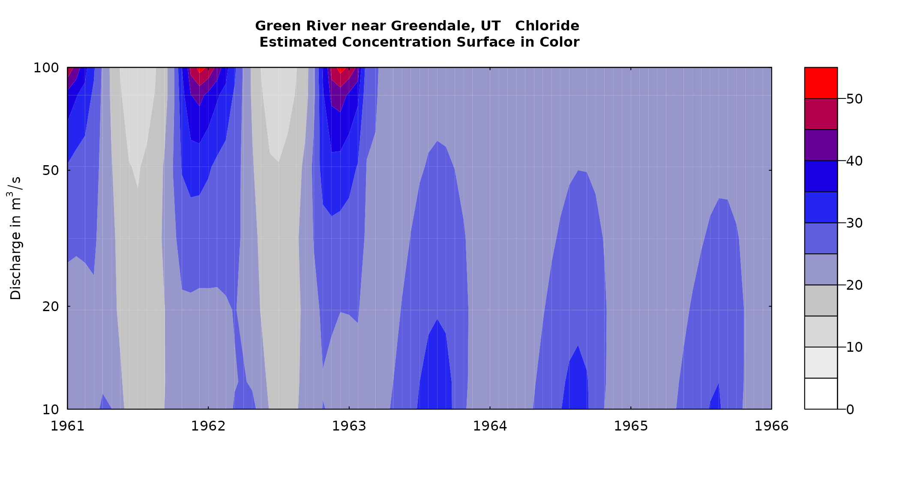
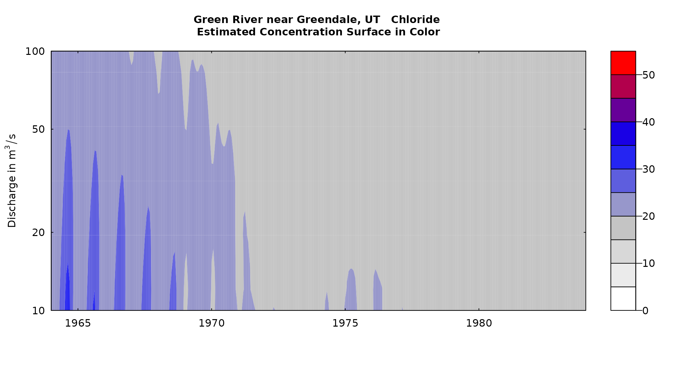

Guide to EGRET 3.0 enhancements
Robert M. Hirsch and Laura DeCicco
2018-08-02
Source:vignettes/Enhancements.Rmd
Enhancements.RmdIntroduction
This vignette documents a set of enhancements of the
EGRET software package. EGRET stands for
“Exploration and Graphics for RivEr Trend” which has been developed my
Robert M. Hirsch and Laura DeCicco of the U.S. Geological Survey. The
EGRET package implements the WRTDS “Weighted Regressions on
Time, Discharge, and Season” and a set of related exploratory tools for
data sets of river discharge and river water quality. Version 2.0 was
originally published in October, 2010. This document, on the 3.0
enhancements assumes that the reader already has a good understanding of
WRTDS and the EGRET implementation of that method. Closely
connected to the EGRET package is a package called
EGRETci (which refers to confidence intervals) developed by
Hirsch and DeCicco. The EGRETci package adds a variety of
uncertainty analyses to the WRTDS method contained in
EGRET. Accompanying the release of EGRET 3.0
is the release of EGRETci 2.0 which carries out various
types of uncertainty analyses associated with the new methods presented
in EGRET 3.0. The two releases are tightly linked in terms
of naming conventions and the sharing of various objects between them.
Reference will be made to these EGRETci functions in the
course of describing the EGRET enhancements.
The release of EGRET 3.0 adds some new flexibility to
the WRTDS method. The flexibility that the new version provides is of
two kinds. One is an ability to partition the sample data into two
periods, one before and one after, a change that happened in the
watershed that we believe to have had an important, sudden, but lasting
impact on water quality. The other is the ability to relax the
assumption of stationarity of streamflow in the flow normalization
process. As shorthand we refer to the first of these enhancements as the
“wall”, and the second as “Generalized Flow Normalization”.
This document discusses the motivations and general concepts behind these enhancements, and then moves to instructions for implementation. It is assumed that the reader already has a good working knowledge of WRTDS and EGRET. Basic reference material for those not already familiar with the method and software include: Hirsch, Moyer and Archfield, 2010 (https://onlinelibrary.wiley.com/doi/abs/10.1111/j.1752-1688.2010.00482.x) and Hirsch and DeCicco, 2015 (https://pubs.usgs.gov/tm/04/a10/) and the “Introduction to the EGRET package” included with the EGRET package.
For a thorough discussion of the generalized flow normalization method implemented in the EGRET enhancements, see the paper: “Tracking changes in nutrient delivery to western Lake Erie: Approaches to compensate for variability and trends in streamflow” (https://www.sciencedirect.com/science/article/pii/S0380133018302235).
The “wall”
The idea of the “wall” is to appropriately handle events that you
believe may result in a sharp discontinuity in the way that
concentrations behave as a function of discharge, year, and season.
WRTDS was designed with a working assumption that changes in the
concentration-discharge relationship (typically depicted in the
EGRET contour plots) are gradual, responding to changes in
behavior of many actors in the watershed. The use of statistical
smoothing in time, which is central to WRTDS, is predicated on the idea
that the changes in the system are gradual. The gradual changes could be
driven by changes in population (and hence wasteloads), changes in land
use or land use practices by many landowners, or many changes in point
source controls implemented by many dischargers. But we know that there
can be situations that depart from that assumption of gradual change.
Some obvious ones are: upgrades to a single dominant point source
discharge, large infrastructure changes in storm-water management
(e.g. tunnel projects in big cities that significantly curtail combined
sewer overflows), construction or removal of a major dam (causing the
pollutant of interest to mix with a large volume of water in the
reservoir significantly changing the concentration-discharge
relationship and in the most extreme cases virtually eliminating any
relationship between concentration and discharge). There is another
category of abrupt change that could also be considered, and that is a
“reset” of river conditions that may be the result of an extreme flood
or extreme drought. The hypothesis is that the behavior of water quality
has changed as a result of this extreme event and that this change is
not a short term thing (i.e. the duration of the event) but rather is
something that persists for a number of years. The new “wall” concept
can provide an effective way to perform a hypothesis test that the event
in question brought about a lasting change, and the approach allows us
to describe the nature of the change that took place.
Operationally the wall idea is this. We will refer the moment in time when we think this change happened as “the wall.” For our purposes here we need to define it as a specific day, even though it might stretch over a period of a few weeks or months. In the code, this day is called sample1EndDate and the next calendar day becomes sample2StartDate which is computed automatically by the code based on sample1EndDate. What the code does is split our Sample data frame into two non-overlapping data frames: Sample1 and Sample2. Sample1 is all the samples collected before the wall and Sample2 is all the samples collected after it. When we estimate the surfaces object (that describes concentration as a function of time, discharge, and season) we want our characterization of the part of the surface before the wall to only use data from Sample1 and not data from Sample2. And similarly, to characterize the part of the surface after the wall we only want to use data from Sample2 and not data from Sample1. The code has within it the ability to estimate these two segments of the surface separately and then “stitch” them together into a single continuous surface.
All of the workflows described in this document allow the user to specify if they want to use a wall and if they do they must specify sample1EndDate. In the code there is an argument called wall which is a logical variable. The default in all the functions is wall = FALSE but if the wall is to be specified, then the user sets wall = TRUE.
Generalized Flow Normalization (GFN)
In the original implementations of WRTDS, the idea of flow normalization was to create records of summary statistics (e.g. annual means of concentration or flux) that are not influenced by the year-to-year random variations of discharge. However, one problem with this approach is that flow normalization can end up not only removing the effect of random variations in discharge but it can also remove the effect of long-term trends in discharge, if such trends exist during our period of study. The original WRTDS flow-normalization approach is based on the assumption that the probability distribution of discharge is stationary. It has a seasonal component but the distribution doesn’t change from year to year. The original paper on WRTDS (published in 2010) (https://onlinelibrary.wiley.com/doi/full/10.1111/j.1752-1688.2010.00482.x) identified this as a limitation of the method and indicated that the method should be enhanced in the future to deal with cases where, over the time frame of the analysis, discharges are substantially non-stationary. The issue becomes serious either when the time period being analyzed is fairly long (say two or more decades) and/or when the trends are very strong. This new technique (GFN) is the enhancement called for in 2010. The original method of flow normalization becomes a special case of GFN, where we specify that the probability distribution of discharge is stationary (with respect to years). We can call that special case, stationary flow normalization (SFN).
Using GFN, the overall trend in water quality (either in concentration or in flux) can be characterized as having two components. The first of these components is the result of changes in the concentration versus discharge relationship. In WRTDS there may be substantial differences in the amount of change in this relationship as a function of season and as a function of discharge, but we can integrate these changes over the seasons and over the probability distribution of discharge in order to get an integrated measure of the “Concentration versus Discharge Trend Component” which we abbreviate as CQTC. The second component of trend in water quality is the result of changes in the probability distribution of discharge. We call this the “Discharge Trend Component” or QTC. The details of how these are calculated is provided in (a manuscript by Choquette, Hirsch, Murphy, Johnson and Confessor related to nutrient loadings to the western basin of Lake Erie, manuscript currently in review). There are two ways that we might envision this change in the probability distribution of discharge taking place: abrupt and gradual.
Abrupt change in the discharge distribution
This is the situation where there is some singular engineered action that results in a change in the probability distribution of streamflow. The new code allows us to treat discharge as stationary within each of two periods in the record, but allows the distribution for the first period to be different from the second period. The most obvious examples would be the completion of a dam upstream of the monitoring site. This needs to be a dam that has a clear impact on discharges at the monitoring site (e.g. decreasing the peak discharges of high flow and/or increasing the low flows). Other changes could include: the removal of a dam, the institution of a new operating policy for the dam (e.g. greatly increasing the size of minimum flows to support habitat), or major new diversions of water into or out of the watershed. There is no well-defined criteria for the magnitude of the change that should trigger the use of GFN except to say that it should be big enough that comparisons of flow duration curves before and after it show an easily discernible difference. In the code we have an argument called flowBreak which is a logical variable. If we do not believe there is such an abrupt shift we set flowBreak = FALSE. If we believe that there is such a shift we set flowBreak = TRUE. If we state that flowBreak = TRUE then we must define an exact day when this change happens. We call the last day before that change as Q1EndDate. In reality we might not be able to specify the exact date of the change but the modeling approach demands that we pick a single day. In the case of a new dam, it may be better to set this change date after some initial period of reservoir filling, rather than the day the dam construction was completed. The new code only allows for a single abrupt change.
Note that flowBreak and the wall are different ideas. There are cases where one might be true and the other false, or they both might be true. There are cases where the timing of both of these kinds of abrupt changes is the same, but they need not be the same. A flowBreak is appropriate when only there is reason to believe the flow behavior changed, and the wall is appropriate when any of the conditions affecting the relationship between streamflow and water quality have abruptly changed. The abrupt change in flow behavior would typically be related to changes the way water is stored, or diverted in or out of the watershed. The abrupt changes in the relationship between streamflow and water quality would typically be related to substantial changes in wastewater treatment (including treatment of stormwater) or introduction of major new point sources, but they could also be related to changes in water storage or diversions.
Gradual change in the discharge distribution
This would be used in a situation in which the distribution of discharges appears to have changed in a gradual fashion over the period of record. Unlike the abrupt change approach described above, here we treat the distribution as potentially changing from one year to the next all the way through the record. This continuous change might arise because of changes in climate, changes in water use (increased consumptive use or increased groundwater pumping), changes in water imports or exports, or changes in artificial drainage (e.g. more tile drains or the restoration or destruction of wetlands). It may be driven by several of these factors. We don’t really have to know the causes of these changes for us to use this GFN approach.
We implement this gradual change approach by using a moving window to select the set of years that are considered relevant to the estimation of the distribution in any given year. We do this by defining an argument called windowSide. For any given year in the middle part of our record the window used to characterize the probability distribution of discharge is a set of years centered on the year for which we are making the WRTDS calculations, plus windowSide number of years on either side of it. For example if windowSide is equal to 7, and the year being evaluated in WRTDS is 2007, then the whole window runs for the 15 years: 2000 through 2010. Contrast this approach to the SFN approach used in the original implementation of WRTDS. Let’s say we are evaluating 2007 but the discharge data we are using runs from 1980 through 2016. In the SFN approach the discharge data set used for estimating the FN values for 2007 runs from 1980 through 2016, while in the GFN approach with windowSide = 7 the only discharge record that is used for 2007 is 2000-2010.
When the year being evaluated is close to the start or end of the period of record, then the window will not be centered on the year being evaluated. Rather it will run for a duration of (2 * windowSide) + 1 from either the start or end of the record. So, if the year of interest were 2011, with windowSide = 7, and the record ended with 2016, then the period covered would be 2002 through 2016.
We can illustrate what this looks like with a real example. The Daily discharge data in this data set runs from 1981-08-06 through 2016-01-14. We want to compute flow normalized concentrations and fluxes for each of the water years 1995 - 2015, and we are using windowSide = 7.

In this figure, the vertical blue lines indicate the start and the end of the discharge record in the Daily data frame. Each of the horizontal red bars indicate a water year for which we want to compute estimates. To the left and right of each of the red bars is a gray bar which indicates the temporal extent of the set of days that are used to provide the discharge record used in the flow normalization calculations for that one water year. Note that as the red bars approach the end of the available record the flow normalization period become asymmetrical around the red bar, but in all cases the total length of the flow normalization period is always 15 years.
Combining gradual and abrupt change in discharge
The code allows the abrupt and gradual approaches to be combined. For example, say we have a very long discharge record and we believe that there are some gradual long-term trends in the flow record driven by climate or by water use, but there is also an abrupt change in some year due to the construction of a large dam. In this case, we can specify that there is an abrupt change, but on either side of that abrupt change there is a gradual change which we will characterize with the moving window. That means that the window moves, but it doesn’t cross the line of the abrupt change. So, the arguments needed to specify this might look like the following flowBreak = TRUE, Q1EndDate = “1990-07-31”, windowSide = 7.
The windowSide argument
One final note here on the selection of windowSide.
We know of no theory-based method of picking the right value for
windowSide. We can explore its impact on the results by
looking at plots of the flow normalize annual values versus time (like
in plotConcHist, or plotFluxHist). A small value of
windowSide will result in a somewhat jagged flow
normalized curve and those fluctuations will be purely a result of the
adding and deleting of flow normalizing years as the window slides
forward. In contrast, as windowSide gets large, and
approaches half the length of the entire discharge record in the Daily
data frame then the flow normalized record will approach the stationary
flow normalized record and we really fail to account at all for the
non-stationarity of discharge. If we compare results with the GFN method
with the SFN approach that is the only approach available in
EGRET version 2.6, and if we use exactly the same starting
and ending dates for the Daily data frame, then we will get exactly the
same results in both if we set windowSide to some very
large number (so that it always covers the entire time span of the Daily
data frame). Setting windowSide = 0 will also produce
results that are equivalent to SFN.
Problem set up
There are three distinct types of problem set-ups that are possible in the new formulation and each of them has its own distinct workflow and outputs. They are known as Pairs, Series, and Groups. What do these terms mean here?
Pairs
This is the situation where the question is: How do the GFN estimates
differ between one specific year and another specific year. These may be
the beginning and end of the period of record, or they may be years
selected based on an overall study design (e.g. a report on water
quality change from 1985 - 2015 at many sites). The function for this
situation is called runPairs. The outputs are a GFN
concentration and flux for each of these two years, and an apportioning
of that change between the CQTC and QTC parts. There is an associated
bootstrap estimate of the uncertainty about the overall change. That is
accomplished by the runPairsBoot function in
EGRETci. The pairs analysis can be done with or without a
wall in the concentration record being analyzed. The results can also be
summarized using tableChange as in earlier versions of
EGRET.
Series
This is the situation in which we want to produce a graphic or a
table that shows the water quality change over time. These might be a
graph of annual mean concentration and FN annual mean concentration, or
a graph showing the annual flux and the FN annual flux. This type of
analysis is performed by the runSeries function in
EGRET. These estimated time histories can be viewed with
the plotConcHist or plotFluxHist
functions that users should already be familiar with. There can also be
table outputs of these time series using tableResults.
There is also a bootstrap analysis called runSeriesBoot
in EGRETci that computes a 90% confidence interval (or
other percent interval) of FN concentration or FN flux around these
annual values. The analysis could be done with or without a wall in the
concentration records being analyzed.
Groups
This is the situation where we might want to answer questions such
as: How did the average flow-normalized flux for the period 1997 - 2017
compare to the average flow-normalized flux for the period 1980 - 1996.
This approach operates like the Pairs approach except in this
case rather than comparing two specific years, in compares two groups of
years. The function that runs that analysis is called
runGroups and like runPairs it not
only computes the change between the two groups of years, but also
apportions that change into CQTC and QTC components. There is also an
associated uncertainty analysis that can be conducted with the function
runGroupsBoot in the EGRETci package. The
motivation for this type of analysis might be that water quality goals
may have been set indicating that the average for the later period
should be less than 75 percent of the average for the earlier period.
The wall may be used in these analyses, and one might
argue that for a fair analysis of change it might be suitable to use
that approach so that things that happened in the earlier period have no
influence on the estimates for the later period, and vice versa. In this
case, the wall might be used, not because of some
natural or engineered event in the watershed, but because of a political
or regulatory decision. The two groups of years can be contiguous with
each other, or there might be a gap between them. The gap might be
appropriate if there was a major investment in pollution control that
took several years from the start of implementation to the end (say a
combined sewer overflow control system with many components) and the
question being posed is: what might have been the impact of this major
upgrade.
Other general comments
Note that the idea of the wall and the idea of generalized flow
normalization are quite different from each other. The wall generally
deals with some event that suddenly and directly influenced water
quality while generalized flow normalization deals with something that
influences the probability distribution of discharge. In some cases, the
same event could be pivotal to both of these. One such example would be
the completion or removal of a dam, but they do not need to be related
to each other, and the time boundaries for each may be quite different.
We can have analysis with a wall and not use generalized flow
normalization, or we can have generalized flow normalization and not
have a wall, or we can have both, or we can have neither. In the latter
case only, the original simpler EGRET workflows will
provide all of the analyses needed. For any of the others we need to use
some new workflows and new functions in EGRET 3.0.
Users should be aware that even though some pre-existing functions
are used to implement the new capabilities in EGRET 3.0,
the workflow and specific commands to carry out the analyses done in
prior versions are unchanged. Also note that as a general rule, these
new flexible approaches are only appropriate for cases where the period
being studied is longer than about 15 years. For trend periods such as
10 years, which are often of great interest to resource managers, the
approaches specified for the older code are the ones that should be
used.
In all of the analyses being introduced here there may be some
advantage to having the discharge data set in the Daily
data frame extend substantially beyond the period of water quality
record being considered. This is in contrast to the guidance given for
earlier EGRET releases, where we encourage the user to
limit the Daily record to being only slightly longer (< 1 year
longer) than the extent of the water quality record in the
Sample data frame. The user needs to decide how far to
take it, but if the windowSide approach is being used,
then there is no point in extending the Daily data
frame more than windowSide years beyond the range of
the Sample data frame. Note that when using a very
large value of windowSide or setting it to zero, will
lead to results that are slightly different from those computed using
SFN because the set of years in the Daily record is different. However,
if the same Daily record is used and windowSide is a
large value or zero, the results will be identical to the SFN
results.
In all of these problem types, the analysis must start with a standard EGRET eList (containing at least the INFO, Daily, and Sample data frames). For each type of problem (Pairs, Series, or Group) there will be one basic function with a name like runPairs that does the data processing (without bootstrap uncertainty analysis). It is designed to run in batch mode, with the call to the function containing a list of all the parameters desired (e.g. lastDaySample1, or paStart and paLong) but many of them will have defaults.
The output of that function will create an object that not only contains the results of the calculation, but also contains all of the needed metadata about how the problem was set up. For example runPairs creates an object named pairResults which contains the salient results but which also has a set of attributes that is crucial to proper documentation of results. Then, in EGRETci 2.0 there is a related function that does the bootstrap analysis, for example runPairsBoot. One of the arguments for that function is the object pairResults. The use of the attributes of that object would then be used to set up the bootstrap implementation (and there would be a few other arguments that relate specifically to the bootstrap). The output of the bootstrap results would have a name like pairBootOut and it would also contain that full list of parameters that were used for running the original analysis and the bootstrap analysis.
The remainder of this document will describe the work flows and outputs of these three types of analyses: Pairs, Series, and Groups.
Pairs analysis
First we are going to run the function runPairs. The data set we will use here is the example nitrate plus nitrite data included in the package for the Choptank River. The sample data cover the period 1979-10-24 through 2011-09-29. In this example are going to compare two years 1985 and 2010. Those are called year1 and year2 respectively. They designate the calendar year in which the period of interest ends (like water years). So if we had paStart = 10 and paLong = 12, and year1 = 1985, then we would be looking at results for 1984-10-01 through 1985-09-30. If we had paStart = 3 and paLong = 4, and year1 = 1985, then we would be looking at results for 1985-03-01 through 1985-06-30.
In this first example we will not use the wall and we will not have a flowBreak either, but we will use the moving window to do the flow normalization of the results.
We can use the windowSide argument with a value that is some integer greater than 1 to designate that we want the window automatically set, and the window for flow normalization will be of width (2 * windowSide) + 1. The suggested value for windowSide is 7 but you must specify the value you want. There is no default.
In this first example we will specify that year1 is 1985 and year2 is 2010 and we will not have a wall, and we will use automatic flow window designation, with a windowSide value of 7.
library(EGRET)
eList <- Choptank_eList
pairResults <- runPairs(eList,
year1 = 1985, year2 = 2010,
windowSide = 7)##
## Choptank River
## Inorganic nitrogen (nitrate and nitrite)
## Water Year
##
## Change estimates 2010 minus 1985
##
## For concentration: total change is 0.397 mg/L
## expressed as Percent Change is 39 %
##
## Concentration v. Q Trend Component 42 %
## Q Trend Component -3.1 %
##
##
## For flux: total change is 0.0543 million kg/year
## expressed as Percent Change is 51 %
##
## Concentration v. Q Trend Component 32 %
## Q Trend Component 19 %
##
## TotalChange CQTC QTC x10 x11 x20 x22
## Conc 0.397 0.429 -0.032 1.01 1.03 1.44 1.43
## Flux 0.054 0.034 0.020 0.12 0.11 0.15 0.16Let’s take a look at this output. The information about Sample1 and Sample2 is there so we can visually check on the size of our Sample data set to make sure that the default settings for minNumObs and minNumUncen are reasonable. In this case Sample1 and Sample2 are the same, but if we had a wall they would be different and we want to make sure that neither of them is too small (e.g. less than 100 samples).
Next we see output that is pretty self-explanatory. We express the change in concentration first in concentration units and then as a percentage change, in this case + 39 %. Then we see the line that tells us what part of that change was due to a change in the Concentration versus Discharge Trend Component (CQTC). In this case it is 42 %. What this means is that if there had been no change in the probability distribution of discharge the concentration trend would have been 42 %. Then we see the Discharge Trend Component (QTC) which is -3.1 %. This would be the amount of the trend if the Concentration versus Discharge relationships hadn’t changed at all over the period, but the probability distribution of discharge had changed.
Then we see the exact same kind of results for flux expressed in millions of kg / year. In this case it is a much larger percentage change than we see for concentration and that is because the changes in concentration are most pronounced at high discharge and there is a good deal of positive trend in the upper end of the distribution of discharge.
A couple of things to note. It is often the case that the QTC is relatively small for the concentration trend but can be quite large for the flux trend. That stands to reason since discharge is such an important aspect of flux. But, also note that it is entirely possible for the CQTC and QTC to have opposite signs, and in some cases they virtually cancel each other out. These relationships are important in interpretations. For example, we could have a case where the CQTC is negative meaning more dilute water while the QTC is positive meaning more water and the net effect is a near zero trend in flux.
The last part of the output is the matrix consisting of 2 rows and 7 columns. This is actually the object called pairResults which is what runPairs returns (the only difference being that what is printed has fewer significant figures).
Everything on the first row is about concentration (in mg/L). Everything on the second row is about flux (in million kg/year). Here’s what the columns represent, but we will take them out of order here. Let’s interpret what these mean for the case used in the example:
| Name | Description |
|---|---|
| x10 | These are the results using the concentration versus discharge relationship (CQR) for 1985, and the discharge distribution (QD) for 1985-2010. |
| x11 | These are the results using the CQR for 1985, and QD for the water years 1985-1999. |
| x20 | These are the results using the CQR for 2010, and QD for the 1985-2010. |
| x22 | These are the results for the CQR for 2010, and QD for the water years 2000-2010. |
| TotalChange | This is the difference between the results from 2010-1985. They are equal to x22 - x11. This is what is shown above in the output as “total change”. |
| CQTC | This number is the difference between between the two years, but only the part that is due to the change in the CQR. It is x20 - x10. In the results reported above as, “Concentration v. Q Trend Component” it is computed as x20 - x10. |
| QTC | This number is the difference between the two years, but only the part that is due to the change in the QD. It is the Total Change - CQTC. Or it can be stated as x22 - x11 - x20 + x10. It is known as the “Q Trend Component.” |
To get the percent changes as described above, use the information provided in the attribute “Other”. There are 2 vectors, one for concentration, one for flux:
concPercents <- attr(pairResults, "Other")[["PercentChangeConc"]]
concPercents## Total Percent Change CQTC Percent QTC Percent
## 38.564699 41.697092 -3.132393
fluxPercents <- attr(pairResults, "Other")[["PercentChangeFlux"]]
fluxPercents## Total Percent Change CQTC Percent QTC Percent
## 50.68378 31.94442 18.73936We can provide a nice looking table of these results as follows (with a specified number of significant digits):
knitr::kable(pairResults, digits = 4)| TotalChange | CQTC | QTC | x10 | x11 | x20 | x22 | |
|---|---|---|---|---|---|---|---|
| Conc | 0.3968 | 0.4290 | -0.0322 | 1.0148 | 1.0289 | 1.4438 | 1.4257 |
| Flux | 0.0543 | 0.0342 | 0.0201 | 0.1162 | 0.1071 | 0.1504 | 0.1613 |
# note that you don't have to use the kable function from knitr to
# see the results, you can just give the command pairResults
# and you will get the output, it just won't look as nice as thisOne final note about this output is that we can also express the flux information as yields, by dividing by the drainage area. This can be very handy when looking at many watersheds. It would be nice to see how their flux trends compare on a unit area basis. To get the yields we can do a matrix multiplication and end up with a new object that still has concentrations in the first row but has yields in the second row. For example if we want to do yield in kg/km^2/year. We could do this. First we can create another data frame called pairResultsYield, and then print it as a table.
pairResultsYield <- pairResults * c(1, 1000000 / eList$INFO$drainSqKm )
knitr::kable(pairResultsYield, digits = 4)| TotalChange | CQTC | QTC | x10 | x11 | x20 | x22 | |
|---|---|---|---|---|---|---|---|
| Conc | 0.3968 | 0.4290 | -0.0322 | 1.0148 | 1.0289 | 1.4438 | 1.4257 |
| Flux | 185.4012 | 116.8527 | 68.5486 | 396.9358 | 365.7999 | 513.7885 | 551.2012 |
Attributes of pairResults
A new feature in the EGRET 3.0 code is that we set up attributes on objects such as pairResults that make sure that we have full documentation of all of the arguments that were used to define the analysis that produced the object. There are four attributes associated with pairResults that provide that documentation. Here they are.
attr(pairResults, "yearPair")## paStart paLong year1 year2
## 10 12 1985 2010
attr(pairResults, "dateInfo")## flowNormStart flowNormEnd flowStart flowEnd
## 1 1979-10-01 1994-09-30 1984-10-01 1985-09-30
## 2 1996-10-01 2011-09-30 2009-10-01 2010-09-30
attr(pairResults, "SampleBlocks")## sample1StartDate sample1EndDate sample2StartDate sample2EndDate
## "1979-10-24" "2011-09-29" "1979-10-24" "2011-09-29"
attr(pairResults, "Other")## $minNumObs
## [1] 100
##
## $minNumUncen
## [1] 50
##
## $windowY
## [1] 7
##
## $windowQ
## [1] 2
##
## $windowS
## [1] 0.5
##
## $wall
## [1] FALSE
##
## $edgeAdjust
## [1] TRUE
##
## $QStartDate
## [1] "1979-10-01"
##
## $QEndDate
## [1] "2011-09-30"
##
## $PercentChangeConc
## Total Percent Change CQTC Percent QTC Percent
## 38.564699 41.697092 -3.132393
##
## $PercentChangeFlux
## Total Percent Change CQTC Percent QTC Percent
## 50.68378 31.94442 18.73936Doing uncertainty analysis on the runPairs results
The uncertainty analysis for the results created by runPairs is done by the function runPairsBoot in EGRETci. All of the arguments that were used to create the runPairs analysis are imported into the bootstrap analysis in runPairsBoot which it obtains from these attributes from the pairResults object. For documentation of runPairsBoot see the vignette EGRETci 2.0 enhancements.
A note about minNumObs
Note that we may not be sure going into the analysis, how many samples are in each segment and if we need to make an adjustment of minNumObs and minNumUncen. The function will tell you how many samples you have in each segment and adjust those parameters if necessary, but on examining the output you may conclude that one of the segments simply had too few samples (e.g. fewer than 50) and you may want to do another run adjusting the placement of the wall or perhaps eliminating it so that the sample size in either subsample is greater than about 50. The way that runPairs adjusts the minimum sample sizes is that it uses the argument fractMin to reduce the minNumObs to account for the small sample size. The default value for fractMin is 0.75. Suppose nObs were the sample size (or the smaller of the two sample sizes if there is a wall) then minNumObs will be adjusted to be 0.75 * nObs. However, the user may not want to have minNumObs reduced at all, in which case they would set fractMin = 1 (and other values of fractMin are also allowed). One other note about minNumObs is that experience has shown that when very large data sets are used (thousands of observations) it may be helpful for stability of the WRTDS model to set minNumObs to a larger value, such as 400. This is particularly important when doing the bootstrap calculations described in the documentation to EGRETci. But the decision to increase minNumObs must be set here in runPairs because the bootstrap code will simply inherit this argument from runPairs.
A more complex pairs example
Let’s say there was a dam built in the year 1995 (say 1995-06-01) so the flow distribution changed at that time, and we might anticipate that the concentration versus discharge relationship also changed at that time. Let’s start by looking at the range of dates that the data covers (the discharge data and the water quality data).
summary(eList$Daily$Date)## Min. 1st Qu. Median Mean 3rd Qu. Max.
## "1979-10-01" "1987-09-30" "1995-09-30" "1995-09-30" "2003-09-30" "2011-09-30"
summary(eList$Sample$Date)## Min. 1st Qu. Median Mean 3rd Qu. Max.
## "1979-10-24" "1989-01-06" "1994-11-27" "1995-10-30" "2002-11-28" "2011-09-29"Let’s say we want the analysis to only include the discharge data for water years 1980 - 2010. So we would set QStartDate = “1979-10-01” and QEndDate = “2010-09-30”. Because the dam likely changed the discharge distribution we want to put in a flowBreak at the time of the dam construction so we need to specify: flowBreak = TRUE and Q1EndDate = “1995-05-31”. And, let’s say that we are concerned that there may also be trends in the flow distribution in both the pre-dam period and the post-dam period. So let’s set windowSide = 7. We also think that the existence of the dam would result in the change in the concentration versus discharge relationship (because the dam creates a large mixing volume and post-dam the concentrations are much less influenced by discharge than was the case before the dam was built). So we want wall = TRUE and sample1EndDate = “1995-05-31” Finally, we would like to restrict our analysis to the period April - August of each year and we are doing our pair comparison between the years 1985 and 2010. Thus: paStart = 4, paLong = 5, year1 = 1985, and year2 = 2010. All of the other arguments will be left to their default values.
pairResults2 <- runPairs(eList, year1 = 1985, year2 = 2010,
windowSide = 7, flowBreak = TRUE,
Q1EndDate = "1995-05-31", wall = TRUE,
sample1EndDate = "1995-05-31",
QStartDate = "1979-10-01",
QEndDate = "2010-09-30",
paStart = 4, paLong = 5)##
## Choptank River
## Inorganic nitrogen (nitrate and nitrite)
## Season Consisting of Apr May Jun Jul Aug
##
## Sample data set was partitioned with a wall right after 1995-05-31
##
## Change estimates 2010 minus 1985
##
## For concentration: total change is 0.412 mg/L
## expressed as Percent Change is 45 %
##
## Concentration v. Q Trend Component 47 %
## Q Trend Component -2.4 %
##
##
## For flux: total change is 0.0456 million kg/year
## expressed as Percent Change is 51 %
##
## Concentration v. Q Trend Component 37 %
## Q Trend Component 14 %
##
## TotalChange CQTC QTC x10 x11 x20 x22
## Conc 0.412 0.435 -0.022 0.915 0.923 1.35 1.34
## Flux 0.046 0.033 0.012 0.092 0.089 0.13 0.13
attr(pairResults2, "yearPair") ## paStart paLong year1 year2
## 4 5 1985 2010
attr(pairResults2, "dateInfo") ## flowNormStart flowNormEnd flowStart flowEnd
## 1 1979-10-01 1994-09-30 1985-04-01 1985-08-30
## 2 1995-10-01 2010-09-30 2010-04-01 2010-08-30
attr(pairResults2, "SampleBlocks") ## sample1StartDate sample1EndDate sample2StartDate sample2EndDate
## "1979-10-24" "1995-05-31" "1995-06-01" "2011-09-29"
attr(pairResults2, "Other")## $minNumObs
## [1] 100
##
## $minNumUncen
## [1] 50
##
## $windowY
## [1] 7
##
## $windowQ
## [1] 2
##
## $windowS
## [1] 0.5
##
## $wall
## [1] TRUE
##
## $edgeAdjust
## [1] TRUE
##
## $QStartDate
## [1] "1979-10-01"
##
## $QEndDate
## [1] "2010-09-30"
##
## $PercentChangeConc
## Total Percent Change CQTC Percent QTC Percent
## 44.674825 47.106474 -2.431649
##
## $PercentChangeFlux
## Total Percent Change CQTC Percent QTC Percent
## 51.38175 37.36370 14.01805The results are more extreme than the previous ones, because the analysis isolates that later period of higher concentrations and higher flows from the earlier period with its much lower concentrations and somewhat lower flows.
Series Analysis
The purpose of Series analysis is to create a time series of
flow-normalized concentrations and flow-normalized flux values. The
function that does this is runSeries in the
EGRET package. The arguments to this function are nearly
identical to those used in runPairs. The function call
would look like this, showing all of the arguments.
eListOut <- runSeries(eList, windowSide,
surfaceStart = NA, surfaceEnd = NA,
flowBreak = FALSE, Q1EndDate = NA,
QStartDate = NA, QEndDate = NA,
wall = FALSE, oldSurface = FALSE,
sample1EndDate = NA,
sampleStartDate = NA, sampleEndDate = NA,
paStart = 10, paLong = 12,
minNumObs = 100, minNumUncen = 50,
windowY = 7, windowQ = 2,
windowS = 0.5, edgeAdjust = TRUE,
verbose = TRUE)What we see here is that there are only two arguments with no default value. The first is eList which will generally just be the eList for the data set we are working with. The second is windowSide. If the user wants to use the same set of years discharge data to flow-normalize every year in the record then they should specify windowSide = 0. If the user wants the window of years used for flow normalization to slide forward in time with the year being analyzed then windowSide should be set equal to some positive integer (7 is a suggested value, but in some cases it may be prudent to increase it, we will return to that question later).
The arguments surfaceStart and surfaceEnd can generally be left out of the call to the function, but sometimes they can be useful. They define the time period for which we want to calculate our flow-normalized results. They are date variables so they would be written as “yyyy-mm-dd”. Left at their default values the period being analyzed will run from slightly before the first sample date to slightly after the last sample date. If we are working with water years then they will be the start of the first water year with data and the end of the last water year with data. If we are using some other period of analysis then they will be adjusted to correspond to the period of analysis. There are times when we may wish to run the analysis for a shorter period because of the design of a multisite study or because we have a very low sample density in some early or later period and although we may want to use the data from those periods we are not comfortable with trying to make annual estimates during those times of low sampling density. So, for example, if we are working in water years, and there are a handful of data from 1980-06-01 through 1981-09-30 and then the sampling starts in earnest in October of 1981, we may want to set surfaceStart = “1981-10-01”.
One other argument of note is oldSurface. It is a
logical variable. The only situation we would use it is this. We have an
old analysis created with EGRET 2.6 or earlier code with the exact same
data set so we already have created the object surfaces
using modelEstimation. We can avoid doing those computations again and
just accept the old surfaces object and proceed with
our computations. If there is a wall then this will not work, because
modelEstimation does not allow for it. Note that if
modelEstimation hasn’t been run, then it will not be
possible to look at any of the diagnostic graphics that look at the
quality of the model (such as fluxBiasMulti, or any
involving the plotting of predictions or residuals such as
plotConcPred or plotResidQ). If these types of
plots are desired then the best thing to do is first run
modelEstimation and then runSeries, with
oldSurfaces = TRUE. If the wall has been used, then the only way to
create these kinds of diagnostic plots is to split the Sample data set
into two separate parts (before and after the wall), create eLists from
each of these, and then run modelEstimation on each of them
and then make the various plots to evaluate the quality of each of the
two different models.
You can also set the last argument verbose to FALSE if you want to avoid the printing of percentage progress indicators on the console.
Let’s do an analysis with the same set up that we used in the first example. Then we will look at some of the standard outputs we might want to consider. To comply with CRAN requirements on how long it takes to build a vignette, we’ll leave this example up to be run by the user.
eListOut <- runSeries(eList, windowSide = 7, verbose = FALSE)
tableResults(eListOut)
plotConcHist(eListOut)
plotFluxHist(eListOut)
tableChange(eListOut, yearPoints = c(1985, 1995, 2010))We might be uncomfortable with the slightly jagged nature of the flow-normalized flux line and may prefer to use a higher value of windowSide. Let’s see what happens if we increase to windowSide = 9 .
eListOut <- runSeries(eList, windowSide = 9, verbose = FALSE)
plotConcHist(eListOut)
plotFluxHist(eListOut)
tableChange(eListOut, yearPoints = c(1985, 1995, 2010))What we see is that there are minor differences in the slope of the trends, particularly in the flow normalized flux, but none of these differences change the fundamental sense of what has happened over this two decade period. An increase in concentration of about 130% and an increase in flux of something in the range of 230% to 250%. The choice of the windowSide argument is fundamentally subjective. If it is “too small” then the results will fluctuate somewhat moving through time as a particularly wet year (or dry year) moves into the flow normalization window and then moves out of it. But, if we make it “too large” we are approaching an assumption of stationarity of discharge which we may believe is inappropriate.
The bootstrap uncertainty analysis for runSeries
In the case of runSeries we can do uncertainty analysis which provides us with confidence intervals around the flow normalized time series that we estimated from running the runSeries function. In this case we actually use the same functions that were used in EGRETci 1.0.3, but they have been modified here to accommodate all of the flexible features of runSeries. The bootstrap computations associated with runSeris are described in the EGRETci 2.0 enhancements vignette.
An example of a complex long record analysis
We will run an analysis here of a very long record that requires the use of several important features of EGRET 3.0 and EGRETci 2.0. The record is from USGS streamgage 09234500, Green River near Greendale, UT and the constituent is chloride (parameter code 00940). The streamgage is located less than a kilometer downstream of Flaming Gorge Dam, which is about 150 meters tall and stores up to 4.7 km^3 which is equivalent to a little more than twice the long-term annual discharge of the river. So it is a very large dam in comparison to the discharge of the river. The closure of the dam was around 1962-1963 and we will, somewhat arbitrarily place it at 1963-03-31. The discharge record we will work with runs from 1950-10-01 to 2018-04-01. The chloride record consists of 601 observations running from 1956-10-04 through 2018-02-01. However, there is a large gap in the chloride record from 2000-08-03 to 2012-08-09 and there are only 51 observations after this gap.
siteID <- "09234500"
parameter_cd<-"00940" #5 digit USGS code
Sample <- readNWISSample(siteID,parameter_cd,"1956-10-04","2018-02-01")
Daily <- readNWISDaily(siteID,"00060","1950-10-01","2018-04-01")
INFO<- readNWISInfo(siteID,parameter_cd, interactive = FALSE)
INFO$shortName <- "Green River near Greendale, UT"
eList_Green <- mergeReport(INFO, Daily, Sample)
eListOut <- runSeries(eList_Green, windowSide = 12,
flowBreak = TRUE, Q1EndDate = "1963-03-31",
wall = TRUE, sample1EndDate = "1963-03-01",
verbose = FALSE)
plotConcHist(eListOut)
plotFluxHist(eListOut)
tableResults(eListOut)##
## Green River near Greendale, UT
## Chloride
## Water Year *
##
## Year Discharge Conc FN_Conc Flux FN_Flux
## cms mg/L 10^6 kg/yr
##
## 1957 75.81 17.3 17.7 31.89 28.1
## 1958 54.08 18.6 18.3 26.85 28.6
## 1959 44.61 18.8 18.9 22.21 29.1
## 1960 38.93 19.9 19.6 23.54 29.6
## 1961 29.23 20.7 20.3 17.54 30.2
## 1962 82.65 21.0 21.0 45.39 30.8
## 1963 6.55 28.1 25.0 5.44 33.7
## 1964 32.69 23.3 23.2 24.17 45.7
## 1965 63.06 23.7 22.7 43.84 44.7
## 1966 46.26 22.4 22.2 32.53 43.6
## 1967 61.24 21.4 21.7 41.21 42.5
## 1968 71.55 20.7 21.1 46.20 41.4
## 1969 76.25 20.1 20.5 47.99 40.2
## 1970 52.30 20.0 19.9 32.71 39.0
## 1971 40.09 19.6 19.3 24.54 37.9
## 1972 75.61 18.4 18.8 43.55 36.7
## 1973 82.40 17.8 18.6 45.65 35.8
## 1974 55.52 18.2 18.1 31.09 35.1
## 1975 70.63 17.6 17.7 38.44 34.6
## 1976 75.09 17.2 17.5 40.18 34.8
## 1977 76.69 16.9 17.4 40.54 34.5
## 1978 39.25 17.7 17.2 21.73 33.5
## 1979 52.40 17.0 17.0 27.80 32.8
## 1980 47.13 16.9 16.7 25.03 32.0
## 1981 40.75 16.8 16.5 21.58 31.0
## 1982 47.75 16.5 16.4 24.67 30.4
## 1983 120.92 15.7 16.2 58.71 30.0
## 1984 98.91 15.8 16.1 49.11 30.5
## 1985 76.81 16.0 16.2 38.70 30.8
## 1986 97.82 16.4 16.5 49.82 31.3
## 1987 62.85 16.7 16.8 32.91 32.9
## 1988 47.36 17.2 17.3 25.63 33.6
## 1989 29.56 17.6 17.6 16.39 33.3
## 1990 30.40 17.9 17.7 17.15 32.2
## 1991 35.02 18.0 17.7 19.80 31.7
## 1992 44.20 17.9 17.7 24.75 30.7
## 1993 37.54 17.9 17.5 20.87 30.5
## 1994 54.53 17.1 17.2 29.20 30.1
## 1995 44.74 16.9 16.7 23.68 29.3
## 1996 74.43 16.1 16.3 38.18 26.9
## 1997 81.13 15.8 15.9 40.80 25.1
## 1998 80.26 15.2 15.5 38.64 23.8
## 1999 92.11 14.9 14.9 43.61 22.6
## 2000 54.97 14.9 15.1 25.83 22.6
## 2001 31.09 15.2 14.9 14.93 22.1
## 2002 26.50 15.7 15.1 13.08 22.6
## 2003 28.47 15.9 15.5 14.30 23.6
## 2004 31.07 15.4 15.3 15.15 24.3
## 2005 42.32 15.2 15.1 20.54 25.6
## 2006 40.32 14.9 14.9 19.17 25.7
## 2007 30.99 14.8 14.9 14.58 25.5
## 2008 36.84 14.9 15.0 17.36 25.5
## 2009 41.90 14.9 15.0 19.73 25.5
## 2010 45.98 14.9 15.0 21.70 25.5
## 2011 78.91 15.2 15.0 38.00 25.5
## 2012 56.11 15.1 15.0 26.82 25.6
## 2013 32.68 15.0 15.1 15.45 25.6
## 2014 41.65 15.0 15.1 19.82 25.6
## 2015 55.52 15.1 15.1 26.62 25.7
## 2016 65.52 15.2 15.1 31.55 25.7
## 2017 110.77 15.4 15.2 54.20 25.7
tableChange(eListOut, yearPoints = c(1957, 1963, 1983, 2017))##
## Green River near Greendale, UT
## Chloride
## Water Year *
##
## Concentration trends
## time span change slope change slope
## mg/L mg/L/yr % %/yr
##
## 1957 to 1963 7.3 1.2 41 6.8
## 1957 to 1983 -1.5 -0.057 -8.4 -0.32
## 1957 to 2017 -2.5 -0.042 -14 -0.24
## 1963 to 1983 -8.8 -0.44 -35 -1.8
## 1963 to 2017 -9.8 -0.18 -39 -0.73
## 1983 to 2017 -1 -0.03 -6.4 -0.19
##
##
## Flux Trends
## time span change slope change slope
## 10^6 kg/yr 10^6 kg/yr /yr % %/yr
## 1957 to 1963 5.7 0.95 20 3.4
## 1957 to 1983 1.9 0.072 6.7 0.26
## 1957 to 2017 -2.3 -0.039 -8.4 -0.14
## 1963 to 1983 -3.8 -0.19 -11 -0.56
## 1963 to 2017 -8 -0.15 -24 -0.44
## 1983 to 2017 -4.2 -0.12 -14 -0.42Now, one of the first things we should do is take account of the fact
that we have this gap from August of 2000 to August of 2012 with no
chloride data. We can use the blankTime function just the
way we did in the older versions of EGRET.
eListOut <- blankTime(eListOut,
startBlank = "2000-10-01",
endBlank = "2012-09-30")
plotConcHist(eListOut)
plotFluxHist(eListOut)
This gives us a more realistic picture, recognizing that we really know nothing about what is happening during this period of no data collection.
What are the figures telling us? What we see is concentrations rising steeply around the time of the closure of the dam and then generally declining since then. A reasonable hypothesis for the long period of chloride decline after dam closure is that as it filled the reservoir water came into contact with lowland soils and rocks that had very high levels of available chloride (from this high desert landscape) and over time the newly submerged landscape moved towards equilibrium with the reservoir water, with most of the highly available chloride having been removed.
plotContours(eListOut, 1957, 2017, 10, 100,
contourLevels = seq(0,55,5), flowDuration = FALSE)It is particularly interesting to look around the time of the closure of the dam so this figure zeros in on that period.
plotContours(eListOut, 1961, 1966, 10, 100,
contourLevels = seq(0,55,5), flowDuration = FALSE)
What we see here is this total reversal of the concentration versus discharge relationship. Before the closure of the dam, winter-time concentrations increased as a function of discharge but summer-time concentrations decreased with increasing discharge (probably representing the idea that large snow-melt events produced the most dilute water). After the dam was closed low discharges resulted in the highest concentrations and these high values peaked in the summer rather than the winter.
Next we can look at the period of 20 years after the closure of the dam to see how the system evolved as the reservoir grew in size and wetted larger and larger areas of previously dry landscape.
plotContours(eListOut, 1964, 1984, 10, 100,
contourLevels = seq(0,55,5), flowDuration = FALSE)
What we see here is a gradual decline in chloride concentration and once we get past about 1972, an almost total vanishing of a relationship between discharge and concentration and a vanishing of a relationship between season and concentration. All of this makes sense, since we now have a very large volume of stored water and the chloride concentration of the outflow just represents an average concentration of what is in the reservoir and that changes only very slightly over time.
Now, we might want to consider how the results would have been different if we had run this same data set with no wall. What we would anticipate is that the transition at the time of the dam closure would be smeared out rather than changing abruptly. Let’s run through such a case:
eListOutNoWall <- runSeries(eList_Green, windowSide = 12,
flowBreak = TRUE, Q1EndDate = "1963-03-31",
wall = FALSE, verbose = FALSE)
plotContours(eListOutNoWall, 1961, 1966, 10, 100,
contourLevels = seq(0,55,5), flowDuration = FALSE)The difference is that without the wall the transition in the contour plot is very gradual and doesn’t reflect the abrupt nature of the change. To comply with CRAN requirements on how long it takes to build a vignette, we’ll leave this example up to be run by the user.
Group analysis
The concept in group analysis is that we wish to compare not just two different years as we did in runPairs but rather, to compare one group of years to another. For example, there may be a strategy for nutrient reduction that calls for decreases in average concentrations, or average fluxes, for some period after the strategy went into effect compared to the time before it went into effect. Or, perhaps we want to evaluate the consequences of a large investment in pollution control that went into effect fairly abruptly at some point in time and we want to do a “before and after” analysis.
The function that serves this purpose is runGroups and it functions very much like runPairs except that it considers two groups of contiguous years rather than considering simply two years. The call to this function, with all of its arguments is this.
groupResults <- runGroups(eList, windowSide,
group1firstYear, group1lastYear,
group2firstYear, group2lastYear,
surfaceStart = NA, surfaceEnd = NA,
flowBreak = FALSE, Q1EndDate = NA,
QStartDate = NA, QEndDate = NA,
wall = FALSE, oldSurface = FALSE,
fractMin = 0.75, sample1EndDate = NA,
sampleStartDate = NA, sampleEndDate = NA,
paStart = 10, paLong = 12,
minNumObs = 100, minNumUncen = 50,
windowY = 7, windowQ = 2, windowS = 0.5,
edgeAdjust = TRUE, verbose = TRUE)All of these arguments should look familiar from the runPairs or runSeries functions. The new four new arguments are: group1firstYear, group1lastYear, group2firstYear, group2lastYear. All four of these are required (there are no defaults). Each one of them is a numeric value which is a four-digit year. Let’s say we are working with water years and we want our analysis to compare the water years 1995 - 2004 with water years 2005 - 2010. Then these four arguments would be 1995, 2004, 2005, 2010 respectively. The years designated always represent the year in which the specific period ends. Thus if we wanted to designate that group1 started with November 1, 1989 and ended with March 31, 2000, and we only wanted to consider the November through March averages, we would set paLong = 5, paStart = 11, group1firstYear = 1990, and group1lastYear = 2000.
As an example, suppose there were a sudden change in a point source of nitrate in the watershed (using the same Choptank watershed example data), and those went into effect at the end of water year 2005 (2004-09-30), but we only wanted to evaluate their impact on the months of March and April. And, furthermore we would like to make a clean separation with the early data to fit the early-period model and the later data to fit the late-period model. We can do this by placing a wall at 2004-09-30. Finally, we want to use GFN, with a windowSide = 7. Here is what we would get.
groupResults <- runGroups(eList,
group1firstYear = 1995, group1lastYear = 2004,
group2firstYear = 2005, group2lastYear = 2010,
windowSide = 7, wall = TRUE,
sample1EndDate = "2004-10-30",
paStart = 4, paLong = 2, verbose = FALSE)##
## Choptank River
## Inorganic nitrogen (nitrate and nitrite)
## Season Consisting of Apr May
##
## Sample data set was partitioned with a wall right after 2004-10-30
##
## Change estimates for
## average of 2005 through 2010 minus average of 1995 through 2004
##
## For concentration: total change is 0.153 mg/L
## expressed as Percent Change is 14 %
##
## Concentration v. Q Trend Component 13 %
## Q Trend Component 0.95 %
##
##
## For flux: total change is 0.00931 million kg/year
## expressed as Percent Change is 5.2 %
##
## Concentration v. Q Trend Component 9.1 %
## Q Trend Component -3.9 %
##
## TotalChange CQTC QTC x10 x11 x20 x22
## Conc 0.1529 0.142 0.0106 1.12 1.12 1.26 1.27
## Flux 0.0093 0.016 -0.0069 0.18 0.18 0.19 0.19The statement of the results in the output are fairly self-explanatory, and very similar to the outputs from runPairs. For completeness, the explanation of these outputs is given here.
The last part of the output is the matrix consisting of 2 rows and 7 columns. This is actually the object called groupResults which is what runGroups returns (the only difference being that what is printed has a more limited number of significant figures).
Everything on the first row is about concentration (in mg/L). Everything on the second row is about flux (in million kg/year).
Here’s what the columns represent, but we will take them out of order here:
| Name | Description |
|---|---|
| x10 | these are the results using the concentration versus discharge relationship (CQR) for group 1, but using the discharge distribution (QD) for the entire period of record (starting with QStartDate and ending with QEndDate, or if they aren’t specified, it is all the discharge data in the Daily data frame). |
| x11 | These are the results using the CQR for group 1, but using the QD specified by the user for group 1. |
| x20 | These are the results using the CQR for group 2, but using the QD for the entire period. |
| x22 | These are the results for the CQR for group 2, but using the QD specified by the user for group 2. |
| TotalChange | This is the difference between the results for group2 - group1. They are equal to x22 - x11. This is what is shown above in the output as “total change.” |
| CQTC | |
| QTC | This number is the difference between the two groups, but only the part that is due to the change in the QD. It is the Total Change - CQTC. Or it can be stated as x22 - x11 - x20 + x10. In the results it is reported as, “Q Trend Component”. |
The analysis of uncertainty about these results is done with the runGroupsBoot function in the EGRETci package. All of the information that sets up the problem is passed to that function via the groupResults object. All of the argument values that were used by runGroups are in the attributes of groupResults. To see them just requires using the following commands.
Final thoughts
We think that these enhancements will improve the usefulness of WRTDS. They will certainly be useful if one or more of these conditions are met: 1) There is an abrupt change in the drivers of the concentration versus discharge relationship, 2) There is a substantial trend in discharge (even if it is only a change in a part of the flow duration curve), 3) the water quality record is long (say greater than 20 years) giving us a reasonable chance of identifying meaningful trends in discharge.
There are many situations where the use of these enhancements of EGRET will lead to results that are not substantially different from those that would arise using earlier versions of the code. But there are cases where these enhancements can prove crucial to making more meaningful interpretations of water quality data sets.